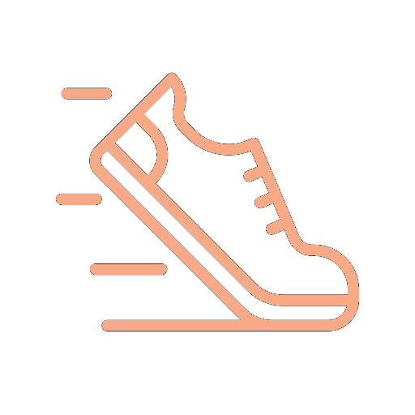

Other Activities
Cooking
I cook every day for my family and friends, I often try new recipes and I enjoy sharing my meals with others. It's also a way for me to express my creativity and relax during busy days.
Theatre & Singing
I have been part of a theater group for nine years, which has helped me develop confidence, teamwork, and listening skills. Recently, I started singing, and I really enjoy being part of a vocal group as well.

Running
Running helps me stay focused and clear my mind. I often run with my friends : it keeps me motivated and helps me reach my goals more easily.